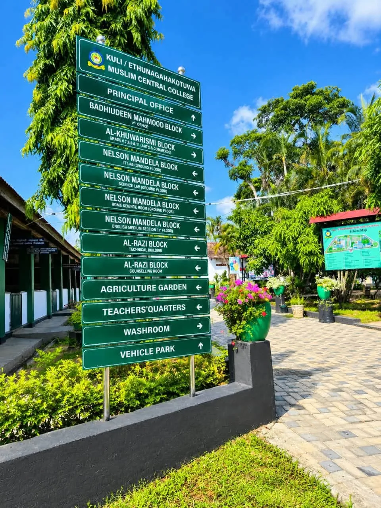
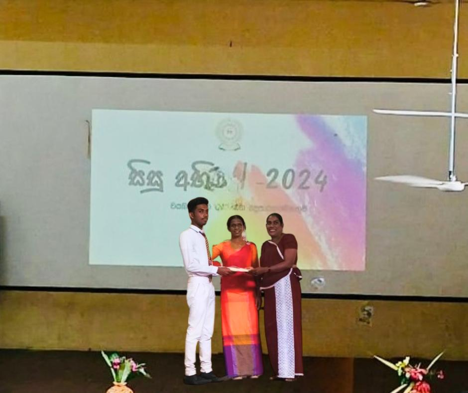

Learning at every stage.
An educational journey from foundational learning to preparation for future study.
A school where learning comes first.
Ethungahakotuwa Muslim Central College has served the Kuliyapitiya Education Zone since 1 December 1949. Everything we do, in the classroom and beyond it, is shaped by one aim: to nurture empowered students through quality education.
Our learning journey runs from primary and secondary education to a dynamic Advanced Level programme, supported by qualified teachers and a school community that stands behind every learner.
This section introduces our faculty, admissions, curriculum, learning resources and the way we recognise student achievement.
* Figures from the official school profile.


Teachers who guide every learner.
Our qualified teachers bring knowledge, patience and care to every classroom. Their steady guidance helps each new generation of EMCC students grow in confidence, discipline and character.
Teaching at EMCC is a shared responsibility between teachers, school leadership and families, all working so that every student can learn well and flourish.


Welcoming new learners.
EMCC welcomes students from Ethungahakotuwa and the surrounding communities of the Kuliyapitiya Education Zone. Admissions follow the official government admission guidelines, so the school office is the best place to confirm current intake details, required documents and application dates.
Parents and guardians are warmly invited to speak with us or visit the school.


From first steps to Advanced Level.
Learning is organised in three connected stages. Primary classes build strong foundations in literacy, numeracy and curiosity. Secondary classes deepen subject knowledge, independent thinking and readiness for examinations. The Advanced Level programme prepares learners for higher education and future opportunities.
Throughout, we keep knowledge, discipline and values at the centre of what we teach.


Information for students and families.
Official school documents are available to download, so that families can read about EMCC and the expectations we hold for every student.


Celebrating effort and achievement.
Hard work deserves to be seen. Through prefect investitures, ceremonies and national recognition, including a Special Commendation in the school sector at the National Productivity Awards 2025/26, EMCC honours the commitment of its students and of the school as a whole.